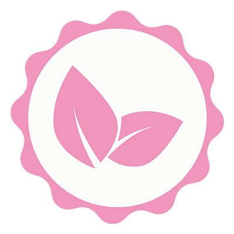

Vegan Aziatisch met een duurzame twist
Aan de Wibautstraat serveert De Veganees verfijnd vegan Aziatisch eten in een sfeervol interieur van bamboe en gerecyclede materialen.
Het shared-dining concept helpt voedselverspilling tegen te gaan, terwijl lokale en biologische ingrediënten – zoals Amsterdamse bieren en Europese wijnen – de duurzame missie versterken. Een inspirerende plek voor milieubewust genieten!
“Heerlijke Aziatische smaken met een duurzame missie!”
Unieke eigenschappen

Veganistisch
Shared dining
Gerecycled interieur
Lokaal gebrouwd
Ga ook langs en ontdek de smaakvolle gerechten!
WEBSITE VAN DE VEGANEES
Bezoek het restaurant in de Wibautstraat!